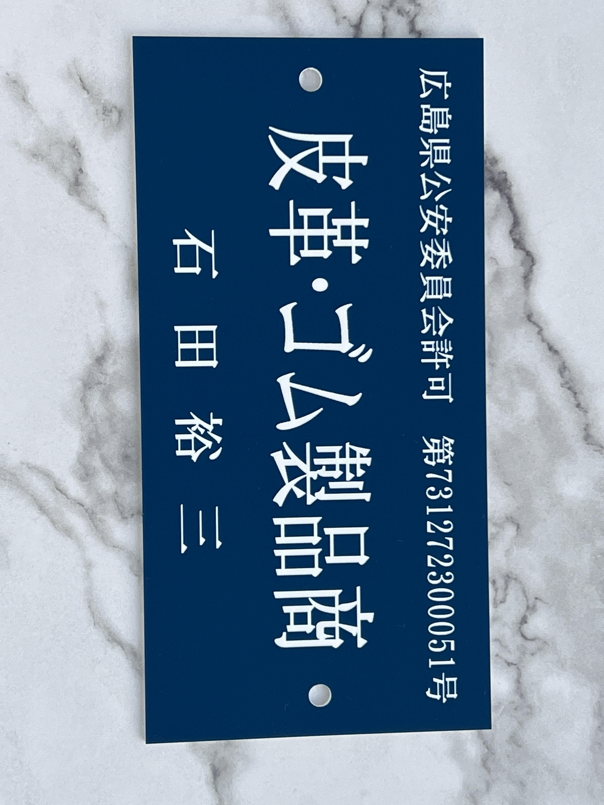

Renovation for Future
クラウドの力で、システムをもっと快適に。
一点もののリセール品を、より美しく。
cloudZは「クラウドインフラ事業」と「物販事業」の2つの顔を持っています。
一見すると異なるこの2つの事業には、共通する美学があります。
それは、「リペア・修復、改善・効率化」。
エンジニアとして、システムの非効率を自動化で快適にすること。
古物商として、使い込まれた品をリペアで輝かせること。
それぞれの専門技術で、お客様の課題を解決し、豊かな価値を提供します。
”改善・効率 今よりも快適なシステムに。”
AWS・Linux・ネットワークの専門知識と 15 年以上の経験をもとに、 運用を見据えた最適なアーキテクチャ設計から構築、オンプレミスからの移行までを一貫して支援します。
運用自動化、デプロイ効率化、障害復旧など、日々の運用負荷を大きく減らす仕組みづくりをサポート。
CI/CD・IaC・スクリプト化により、手作業を減らし、安定した継続運用を実現します。
セキュリティ改善や不具合調査にも柔軟に対応します。
クラウドコストの見える化と削減提案、技術相談、社内トレーニングまで幅広く対応。
クラウド活用の“迷い”を解消し、持続的な成長を支援します。
AWS 上でのホームページ運用など、小規模〜中規模案件にも柔軟に対応可能です。
Reliability & Security
堅牢なインフラ基盤の構築
アクセサリー・時計・ブランドバッグなどの一点物を中心に、
丁寧なリペア＆クリーニングを施した上で、国内外のお客様へ「価値ある一品」をお届けしています。
USED品ならではの魅力を最大限引き出し、
お客様が手にした瞬間に“ときめき”を感じられる商品づくりを大切にしています。
素材に合わせたクリーニング、金属部分の磨き、不動の時計のリペアなど、プロの視点で「本来の美しさ」を取り戻します。
プロ仕様の機材を用い、ライティングや構図にこだわった美しい写真をご提供。”正確”かつ”ときめき”が伝わる撮影を徹底。
アメリカ・カナダ・ヨーロッパ・アジアなど世界各国へ販売。配送・通関対応の知見を活かし、安心取引を実現しています。
丁寧な梱包・迅速な発送・誠実なコミュニケーションを徹底。多くのお客様から高い評価とリピート購入をいただいています。

古物商許可証
広島県公安委員会 第731272300051号
ご覧いただきありがとうございます。
cloudZ（クラウドZ）代表の 石田 裕三 です。
保守視点を大切にしたクラウドインフラエンジニアとして活動しています。
小規模事業ならではの軽いフットワークで、
お客様の “本当に困っていること” に真摯に向き合い、
解決・改善・効率化につながる仕組みをご提案し構築してまいります。
また、アクセサリーや時計を丁寧にリペアし、
国内外のお客様へ価値ある一点物をお届けする物販事業を行っています。
ふたつの事業にも共通する想いは、「より良くしたい」 という気持ちです。
未知の物事に ”チャレンジ”することが好きで
過去にトライアスロンにチャレンジしたこともあります。
３種目（泳ぎ・自転車・走り）を複数こなす事が大変で、現在はふたつの事業に絞ってチャレンジを続けています。
末永く信頼いただけるパートナーとなれるよう、
今後ともどうぞよろしくお願いいたします。
Infrastructure Engineer / Antique Dealer
cloudZ 代表 石田 裕三
Yuzo Ishida